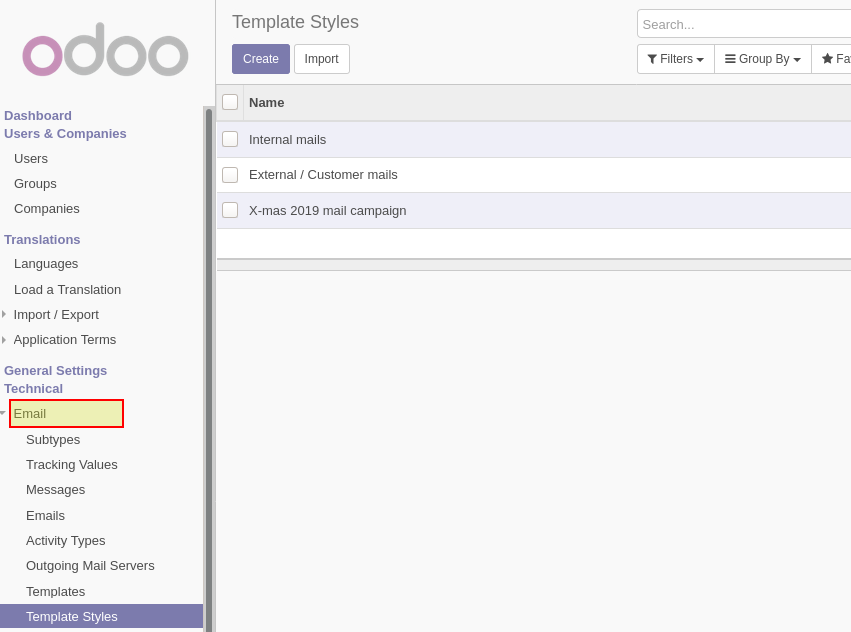

<section class="oe_container">
  <div class="oe_row oe_spaced">
    <h2 class="oe_slogan" style="color:#875A7B;"><b>Mail Template Styling</b></h2>
    <h3 class="oe_slogan">Universally manage and style mail templates sent from Odoo</h3>

    <div class="alert alert-info" style="padding:8px;font-weight:300;font-size:20px;">
      <i class="fa fa-hand-o-right"></i><b> Features: </b>
      <ul class="list-unstyled">
        <li>
	  <i class="fa fa-check-square-o text-primary"></i>
          Manage and assign stylesheets (CSS) to Mail Templates, all within Odoo.
        </li>
        <li>
          <i class="fa fa-check-square-o text-primary"></i>
          Optionally strip the original inline-styling during rendering.
          This doesn't alter the Mail Template body, it's just post-processing during rendering-time. So original Odoo and 3rd party templates stay unchanged.
        </li>
        <li>
          <i class="fa fa-check-square-o text-primary"></i>
          Optionally print the Mail Template ID below the actual message.
        </li>
      </ul>
    </div>
</section>

<section class="oe_container">
  <div class="oe_row oe_spaced">
    <h2 class="oe_slogan" style="color:#875A7B;">Manage stylesheets (CSS)</h2>
    <p>
      <strong>Menu: </strong>Settings / Technical / Email / Template Styles
    </p>
    <div class="oe_row_img oe_centered">
      <h4 class="oe_mb16 text-center">List stylesheets</h4>
      
    </div>
    <div class="oe_row_img oe_centered">
      <h4 class="oe_mb16 text-center">Edit stylesheet</h4>
      
    </div>
    <div class="oe_row_img oe_centered">
      <h4 class="oe_mb16 text-center">Edit mail template with styling</h4>
      
    </div>
  </div>
</section>

<section class="oe_container oe_dark">
  <div class="oe_row oe_spaced">
    <h2 class="oe_slogan" style="color:#875A7B;">Installation notes</h2>
    <h3 class="oe_slogan">A bit of system adminsitration is required</h3>
    <div class="oe_span12">
      <h4>Python dependency: premailer</h4>
      <em>Required to transform the stylesheet/CSS into inline style attributes into the mail body HTML.</em>
      <p class="oe_mt16 oe_mb32 text-justify">
        Install on command-line with: <code>pip(3) install premailer</code>
      </p>
    </div>
  </div>
</section>
